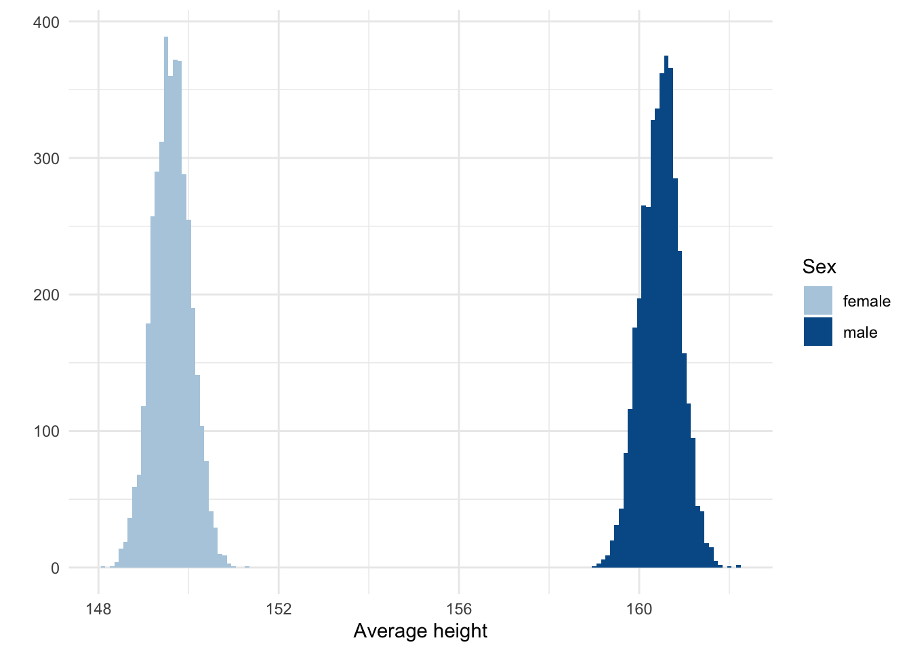
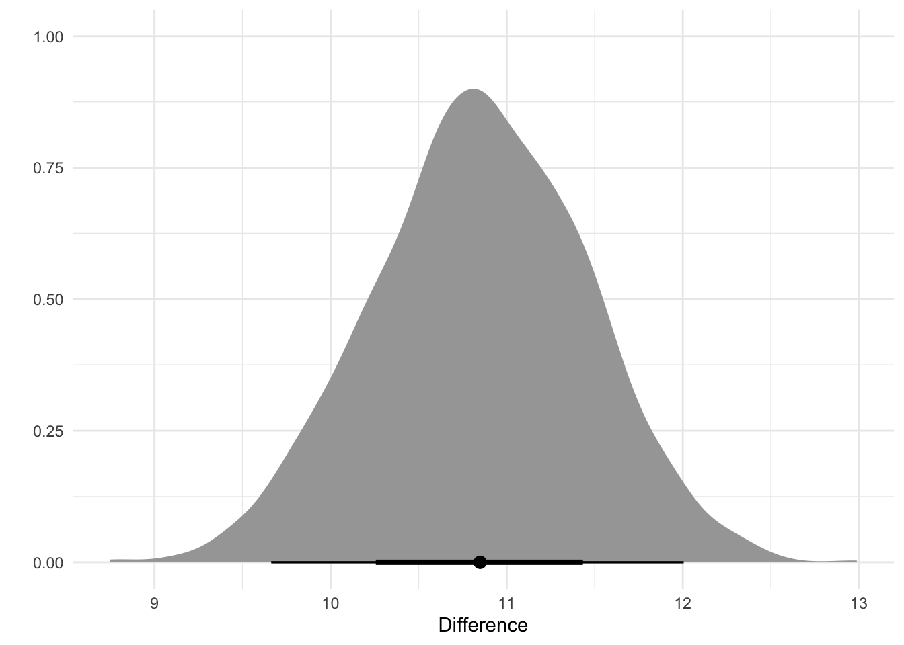

The fourth of a series of tutorial posts on Bayesian analyses. In this post I focus on using brms to model the difference between two groups.
Published
April 24, 2023
In this blog post I will cover how to use brms to analyze the difference between two groups. Interestingly, this might seem like a very simple analysis, but there are actually multiple ways to go about this. I’ll try to cover a few here.
The data we’ll use is the same as in the previous posts. This data contains the sex of the participant in a column called male, in addition to their height, weight, and age. This means we can investigate, say, whether there’s a difference in height between men and women.
Run the following setup code if you want to follow along.
Probably the most common method to analyze the difference between two groups is to regress the outcome on dummy coded data. That means the group column contains the information about both groups, usually using a 0 and 1 to indicate which group is which. The male column in the current data frame is dummy coded, with a 0 for females and a 1 for males. The R formula for regressing height on male is height ~ male. Let’s see what priors we need to set for this by using the get_prior() function.
Code
get_prior(height ~ male, data = data)
prior class coef group resp dpar nlpar lb ub
(flat) b
(flat) b male
student_t(3, 154.3, 8.5) Intercept
student_t(3, 0, 8.5) sigma 0
source
default
(vectorized)
default
default
The output shows we need to set a prior on sigma, the Intercept, and on the male coefficient. The intercept refers to the heights of female participants and the male coefficient refers to the difference between males and females, at least that’s what you would expect in standard regression. We’ll see that things are a bit more complicated. Sigma refers, as always, to the standard deviation of the residuals.
Writing down this model shows that it’s actually the same as the simple regression model:
Despite this similarity, there’s an issue here that we need to get into. Let’s demonstrate this issue by setting some priors and running the model while only sampling from the priors. This means the estimates we get for the intercept and male coefficient should match our priors.
Family: gaussian
Links: mu = identity; sigma = identity
Formula: height ~ male
Data: data (Number of observations: 352)
Draws: 4 chains, each with iter = 2000; warmup = 1000; thin = 1;
total post-warmup draws = 4000
Population-Level Effects:
Estimate Est.Error l-95% CI u-95% CI Rhat Bulk_ESS Tail_ESS
Intercept 160.31 5.53 149.75 170.83 1.00 2970 2614
male 10.08 4.96 0.25 19.89 1.00 2986 2721
Family Specific Parameters:
Estimate Est.Error l-95% CI u-95% CI Rhat Bulk_ESS Tail_ESS
sigma 17.18 77.44 0.49 82.26 1.00 3059 1884
Draws were sampled using sample(hmc). For each parameter, Bulk_ESS
and Tail_ESS are effective sample size measures, and Rhat is the potential
scale reduction factor on split chains (at convergence, Rhat = 1).
Looking at the estimates we see that the estimate for male is indeed around 10 but the intercept estimate is not close to what we set it too. The intercept has an estimate of around 160, even though we set it to 165. How can this be? The reason is that brms internally centers the intercept so that it corresponds to the expected response when all predictors are held at their means. This is what the prior is set to, not to the mean of the heights of female participants. brms also re-generates the true intercept, which is the one we see in the output, so the intercept in the output does correctly indicate the mean height of female participants. Confusing.
To prevent this from happening, we need to suppress the default intercept and explicitly add one as a coefficient. This means we need to update our prior for the intercept to refer to a coef (instead of class).
Family: gaussian
Links: mu = identity; sigma = identity
Formula: height ~ 0 + Intercept + male
Data: data (Number of observations: 352)
Draws: 4 chains, each with iter = 2000; warmup = 1000; thin = 1;
total post-warmup draws = 4000
Population-Level Effects:
Estimate Est.Error l-95% CI u-95% CI Rhat Bulk_ESS Tail_ESS
Intercept 165.01 5.05 154.95 174.84 1.00 3028 2572
male 10.03 4.86 0.19 19.33 1.00 3394 2771
Family Specific Parameters:
Estimate Est.Error l-95% CI u-95% CI Rhat Bulk_ESS Tail_ESS
sigma 18.58 148.85 0.49 78.55 1.00 2741 1446
Draws were sampled using sample(hmc). For each parameter, Bulk_ESS
and Tail_ESS are effective sample size measures, and Rhat is the potential
scale reduction factor on split chains (at convergence, Rhat = 1).
The estimates (i.e., our priors) show that the average height for women is 165.01 and that for men is 165.01 + 10.03 = 175.04.
But now there’s a new problem. Let’s take a look at how uncertain we should be at these estimates by predicting the means for both men and women and then calculating the width of the 95% quartile interval.
We see that the width for males is slightly wider than that for females. If you run the model multiple times at different seeds, you’ll see that this is something that happens consistently. The reason there is more uncertainty for the mean of male participants is that we’ve added a separate prior that only applies to males—the prior on the male coefficient. The mean of female participants is wholly determined by the data and the prior on the intercept, but for males it’s the data and the prior for the intercept + the prior for the male coefficient. This is not desirable.
On top of that it less intuitive to think about the priors as a mean for females and then a prior for how much males deviate from this mean. It seems nicer to just specify what we think the heights are for females and what the heights are for males, without thinking about the deviation.
Both of these issues can be solved by using index coding instead of dummy coding.
Index coding
Index coding requires that we create a new column that is a factor or that contains string values to indicate the sex of the participant. Below I create a new column called sex that contains the values male and female as string values.
Code
data <-mutate(data, sex =if_else(male ==1, "male", "female"))
To solve the uncertainty issue, we regress height onto the index-coded sex column, and omit an intercept. This will result in a model that requires priors for each group separately.
Code
get_prior(height ~0+ sex, data = data)
prior class coef group resp dpar nlpar lb ub source
(flat) b default
(flat) b sexfemale (vectorized)
(flat) b sexmale (vectorized)
student_t(3, 0, 8.5) sigma 0 default
As you can see, we need a prior for sexfemale and sexmale, as well as sigma.
We should alter how we describe this model. We can now drop the \(\beta\) parameter from the model and we should more explicitly indicate that we will model several \(\alpha\) parameters, one for each sex.
Next, I simply translated the previous priors to this new notation. The prior for the heights of female participants stays the same (a normal distribution with a mean of 165 and a standard deviation of 5). The prior for the heights of male participants is also still a normal distribution, but now with a mean of 175 (165 + 10) and the same standard deviation.
Family: gaussian
Links: mu = identity; sigma = identity
Formula: height ~ 0 + sex
Data: data (Number of observations: 352)
Draws: 4 chains, each with iter = 2000; warmup = 1000; thin = 1;
total post-warmup draws = 4000
Population-Level Effects:
Estimate Est.Error l-95% CI u-95% CI Rhat Bulk_ESS Tail_ESS
sexfemale 165.02 5.01 155.55 175.14 1.00 3168 2712
sexmale 175.02 5.05 165.17 184.97 1.00 3279 2643
Family Specific Parameters:
Estimate Est.Error l-95% CI u-95% CI Rhat Bulk_ESS Tail_ESS
sigma 21.58 197.75 0.66 80.42 1.00 3452 1983
Draws were sampled using sample(hmc). For each parameter, Bulk_ESS
and Tail_ESS are effective sample size measures, and Rhat is the potential
scale reduction factor on split chains (at convergence, Rhat = 1).
Let’s confirm that the uncertainty in the priors for the male and female average heights are the same.
Family: gaussian
Links: mu = identity; sigma = identity
Formula: height ~ 0 + sex
Data: data (Number of observations: 352)
Draws: 4 chains, each with iter = 2000; warmup = 1000; thin = 1;
total post-warmup draws = 4000
Population-Level Effects:
Estimate Est.Error l-95% CI u-95% CI Rhat Bulk_ESS Tail_ESS
sexfemale 149.62 0.42 148.81 150.44 1.00 3767 3144
sexmale 160.47 0.43 159.62 161.30 1.00 4002 3094
Family Specific Parameters:
Estimate Est.Error l-95% CI u-95% CI Rhat Bulk_ESS Tail_ESS
sigma 5.56 0.21 5.16 6.00 1.00 4697 3302
Draws were sampled using sample(hmc). For each parameter, Bulk_ESS
and Tail_ESS are effective sample size measures, and Rhat is the potential
scale reduction factor on split chains (at convergence, Rhat = 1).
The estimates show, more clearly now, that the average height for women is 149.62 and that for men is 160.47. The posteriors of these estimates are shown below.
Code
draws <- model_index %>%gather_draws(b_sexfemale, b_sexmale) %>%mutate(sex =str_extract(.variable, "female|male"))ggplot(draws, aes(x = .value, fill = sex)) +geom_histogram(binwidth =0.1) +labs(x ="Average height", y ="", fill ="Sex") +scale_fill_manual(values =c(blue_2, blue_4))

Posterior distributions of the coefficients for men and women.
Calculating a difference score
In the previous section I’ve argued that we should use index coding so that we can more easily think about, and see the results, of the priors about the two groups. I realize, though, that we are often still interested in the difference between the groups. This is easy to obtain, though. We can simply take the posterior samples from each group and subtract them from each other.
In the code below I extract the draws of each parameter (b_sexfemale and b_sexmale) and calculate the difference score. I then extract the draws of the difference score and calculate the median and quartile interval.
y ymin ymax .width .point .interval
1 10.849 9.6629 12.005 0.95 median qi
Alternatively, we can also plot it as a distribution.
Code
draws <- model_index %>%spread_draws(b_sexfemale, b_sexmale) %>%mutate(difference = b_sexmale - b_sexfemale)ggplot(draws, aes(x = difference)) +geom_histogram(binwidth =0.1, fill = blue_3) +labs(x ="Difference", y ="")

Summary
Just like running a correlation, testing a group difference consists of running a simple regression. However, having groups as a predictor means the regression is not so simple after all. You have to think more carefully about what the priors mean (particularly the intercept) and you have to deal with greater uncertainty for some estimates, depending on how you code the group predictor. I’ve shown that explicitly including the intercept and using index coding makes thinking about this scenario a bit easier.
This post was last updated on 2023-08-07.
Source Code
---title: "Bayesian tutorial: Two groups"description: "The fourth of a series of tutorial posts on Bayesian analyses. In this post I focus on using brms to model the difference between two groups."date: 2023-04-24categories: - statistics - tutorial - Bayesian statistics - regressioncode-fold: truecode-tools: truetoc: true---In this blog post I will cover how to use brms to analyze the difference between two groups. Interestingly, this might seem like a very simple analysis, but there are actually multiple ways to go about this. I'll try to cover a few here.The data we'll use is the same as in the previous posts. This data contains the sex of the participant in a column called `male`, in addition to their height, weight, and age. This means we can investigate, say, whether there's a difference in height between men and women.Run the following setup code if you want to follow along.```{r}#| label: setup#| message: falselibrary(tidyverse)library(brms)library(tidybayes)theme_set(theme_minimal())blue_1 <-"#d1e1ec"blue_2 <-"#b3cde0"blue_3 <-"#6497b1"blue_4 <-"#005b96"blue_5 <-"#03396c"blue_6 <-"#011f4b"options(mc.cores =4,brms.threads =4,brms.backend ="cmdstanr",brms.file_refit ="on_change")data <-read_csv("Howell1.csv")data <-filter(data, age >=18)```## Dummy codingProbably the most common method to analyze the difference between two groups is to regress the outcome on dummy coded data. That means the group column contains the information about both groups, usually using a 0 and 1 to indicate which group is which. The `male` column in the current data frame is dummy coded, with a 0 for females and a 1 for males. The R formula for regressing height on male is `height ~ male`. Let's see what priors we need to set for this by using the `get_prior()` function.```{r}#| label: get-prior-dummyget_prior(height ~ male, data = data)```The output shows we need to set a prior on sigma, the Intercept, and on the male coefficient. The intercept refers to the heights of female participants and the male coefficient refers to the difference between males and females, at least that's what you would expect in standard regression. We'll see that things are a bit more complicated. Sigma refers, as always, to the standard deviation of the residuals.Writing down this model shows that it's actually the same as the simple regression model:$$\displaylines{heights_i ∼ Normal(\mu_i, \sigma) \\ \mu_i = \alpha + \beta x_i}$$Despite this similarity, there's an issue here that we need to get into. Let's demonstrate this issue by setting some priors and running the model while only sampling from the priors. This means the estimates we get for the intercept and male coefficient should match our priors.```{r}#| label: model-dummy-priors-defaultmodel_dummy_priors_default <-brm( height ~ male,data = data,family = gaussian,prior =c(prior(normal(165, 5), class ="Intercept"),prior(normal(10, 5), coef ="male"),prior(cauchy(5, 5), class ="sigma") ),sample_prior ="only",cores =4,file ="./models/model-dummy-priors-default.rds")model_dummy_priors_default```Looking at the estimates we see that the estimate for male is indeed around 10 but the intercept estimate is not close to what we set it too. The intercept has an estimate of around 160, even though we set it to 165. How can this be? The reason is that brms internally centers the intercept so that it corresponds to the expected response when all predictors are held at their means. This is what the prior is set to, not to the mean of the heights of female participants. brms also re-generates the true intercept, which is the one we see in the output, so the intercept in the output does correctly indicate the mean height of female participants. Confusing.To prevent this from happening, we need to suppress the default intercept and explicitly add one as a coefficient. This means we need to update our prior for the intercept to refer to a `coef` (instead of `class`).```{r}#| label: model-dummy-priorsmodel_dummy_priors <-brm( height ~0+ Intercept + male,data = data,family = gaussian,prior =c(prior(normal(165, 5), coef ="Intercept"),prior(normal(10, 5), coef ="male"),prior(cauchy(5, 5), class ="sigma") ),sample_prior ="only",seed =4,file ="./models/model-dummy-priors.rds")model_dummy_priors```The estimates (i.e., our priors) show that the average height for women is `r round(fixef(model_dummy_priors)[1, 1], 2)` and that for men is `r round(fixef(model_dummy_priors)[1, 1], 2)` + `r round(fixef(model_dummy_priors)[2, 1], 2)` = `r round(fixef(model_dummy_priors)[1, 1] + fixef(model_dummy_priors)[2, 1], 2)`.But now there's a new problem. Let's take a look at how uncertain we should be at these estimates by predicting the means for both men and women and then calculating the width of the 95% quartile interval.```{r}#| label: model-dummy-issuetibble(male =c(0, 1)) %>%add_epred_draws(model_dummy_priors) %>%median_qi() %>%mutate(width = .upper - .lower)```We see that the width for males is slightly wider than that for females. If you run the model multiple times at different seeds, you'll see that this is something that happens consistently. The reason there is more uncertainty for the mean of male participants is that we've added a separate prior that only applies to males---the prior on the male coefficient. The mean of female participants is wholly determined by the data and the prior on the intercept, but for males it's the data and the prior for the intercept + the prior for the male coefficient. This is not desirable.On top of that it less intuitive to think about the priors as a mean for females and then a prior for how much males deviate from this mean. It seems nicer to just specify what we think the heights are for females and what the heights are for males, without thinking about the deviation.Both of these issues can be solved by using index coding instead of dummy coding.## Index codingIndex coding requires that we create a new column that is a factor or that contains string values to indicate the sex of the participant. Below I create a new column called `sex` that contains the values `male` and `female` as string values.```{r}#| label: data-preparationdata <-mutate(data, sex =if_else(male ==1, "male", "female"))```To solve the uncertainty issue, we regress height onto the index-coded sex column, and omit an intercept. This will result in a model that requires priors for each group separately.```{r}#| label: get-priorget_prior(height ~0+ sex, data = data)```As you can see, we need a prior for `sexfemale` and `sexmale`, as well as sigma.We should alter how we describe this model. We can now drop the $\beta$ parameter from the model and we should more explicitly indicate that we will model several $\alpha$ parameters, one for each sex.$$\displaylines{heights_i ∼ Normal(\mu_i, \sigma) \\ \mu_i = \alpha_{sex[i]}}$$Next, I simply translated the previous priors to this new notation. The prior for the heights of female participants stays the same (a normal distribution with a mean of 165 and a standard deviation of 5). The prior for the heights of male participants is also still a normal distribution, but now with a mean of 175 (165 + 10) and the same standard deviation.```{r}#| label: model-index-priormodel_index_prior <-brm( height ~0+ sex,data = data,family = gaussian,prior =c(prior(normal(165, 5), coef ="sexfemale"),prior(normal(175, 5), coef ="sexmale"),prior(cauchy(5, 5), class ="sigma") ),sample_prior ="only",seed =4,file ="./models/model-index-prior.rds")model_index_prior```Let's confirm that the uncertainty in the priors for the male and female average heights are the same.```{r}#| label: model-dummy-solutiontibble(sex =c("male", "female")) %>%add_epred_draws(model_index_prior) %>%median_qi() %>%mutate(width = .upper - .lower)```They are. This means we can now run the model and also sample from the posterior.```{r}#| label: model-indexmodel_index <-brm( height ~0+ sex,data = data,family = gaussian,prior =c(prior(normal(165, 5), coef ="sexfemale"),prior(normal(175, 5), coef ="sexmale"),prior(cauchy(5, 5), class ="sigma") ),sample_prior =TRUE,seed =4,file ="./models/model-index.rds")model_index```The estimates show, more clearly now, that the average height for women is `r round(fixef(model_index)[1, 1], 2)` and that for men is `r round(fixef(model_index)[2, 1], 2)`. The posteriors of these estimates are shown below.```{r}#| label: groups-plot#| fig-cap: Posterior distributions of the coefficients for men and women.draws <- model_index %>%gather_draws(b_sexfemale, b_sexmale) %>%mutate(sex =str_extract(.variable, "female|male"))ggplot(draws, aes(x = .value, fill = sex)) +geom_histogram(binwidth =0.1) +labs(x ="Average height", y ="", fill ="Sex") +scale_fill_manual(values =c(blue_2, blue_4))```## Calculating a difference scoreIn the previous section I've argued that we should use index coding so that we can more easily think about, and see the results, of the priors about the two groups. I realize, though, that we are often still interested in the difference between the groups. This is easy to obtain, though. We can simply take the posterior samples from each group and subtract them from each other.In the code below I extract the draws of each parameter (`b_sexfemale` and `b_sexmale`) and calculate the difference score. I then extract the draws of the difference score and calculate the median and quartile interval.```{r}#| label: difference-scoremodel_index %>%spread_draws(b_sexfemale, b_sexmale) %>%mutate(difference = b_sexmale - b_sexfemale) %>%pull(difference) %>%median_qi()```Alternatively, we can also plot it as a distribution.```{r}#| label: difference-score-plot#| warning: falsedraws <- model_index %>%spread_draws(b_sexfemale, b_sexmale) %>%mutate(difference = b_sexmale - b_sexfemale)ggplot(draws, aes(x = difference)) +geom_histogram(binwidth =0.1, fill = blue_3) +labs(x ="Difference", y ="")```## SummaryJust like running a correlation, testing a group difference consists of running a simple regression. However, having groups as a predictor means the regression is not so simple after all. You have to think more carefully about what the priors mean (particularly the intercept) and you have to deal with greater uncertainty for some estimates, depending on how you code the group predictor. I've shown that explicitly including the intercept and using index coding makes thinking about this scenario a bit easier.*This post was last updated on `r format(Sys.Date(), "%Y-%m-%d")`.*